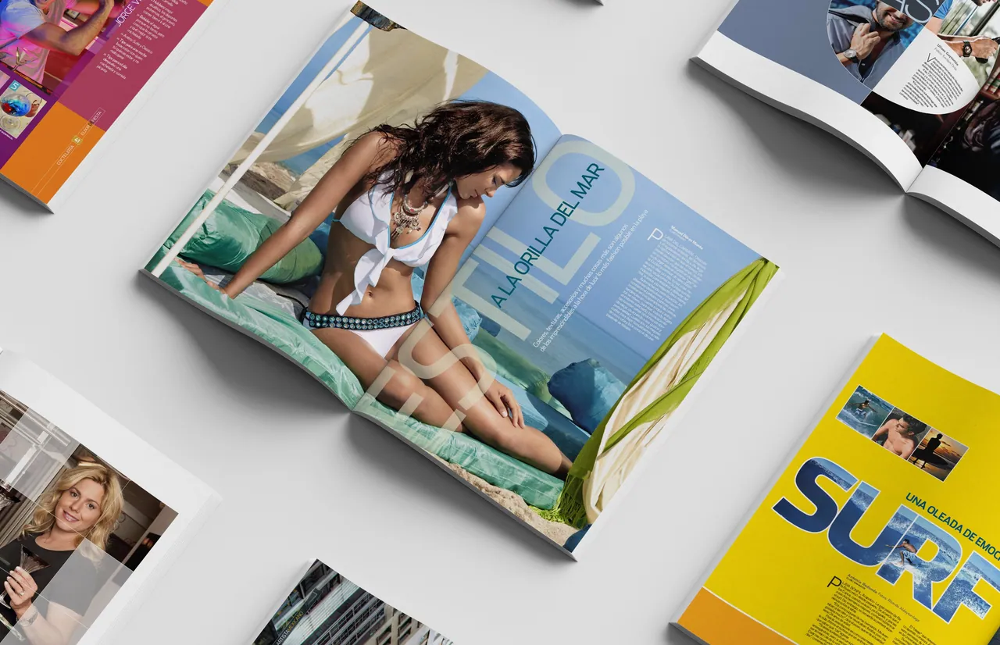

Magazine
‘Club’. The Luxury Editions
Club is REFORMA’s society and luxury lifestyle brand. In my years there it was the Sunday supplement for Mexico’s business owners and socialites, in the elevated voice of a newspaper known for its journalistic ethos, and a natural home for luxury advertisers. I led its specialty magazines: separate themed titles under the Club brand, each with its own covers and issues.
The design had to be worthy of those pages. I created the visual language used throughout each publication and collaborated with well-known industry journalists and photographers to create captivating, relevant, and timely content to delight both the interviewees and the readers.
- Role
- Art Director & Designer
- Client
- REFORMA Newspaper
- Project
- Bi-monthly Specialty Magazines
- Years
- 2007–2010
- Photographers
- Fabián Barajas, Aggi Garduño, Enrique Ortiz, Carlos Figueroa
- Editor
- Sonia Paredes
Special issue
Club Holidays
Cover and feature spread
The holiday special dresses the magazine in gold, plum and slate. The cover story, the portrait openers and the spreads share one palette, so the whole issue reads as a single festive feature.
Íconos Navideños: the opener
Vanessa Huppenkothen
Karim Abud
Yunuen Millán
Carlos Bisdikian
Susana Henkel